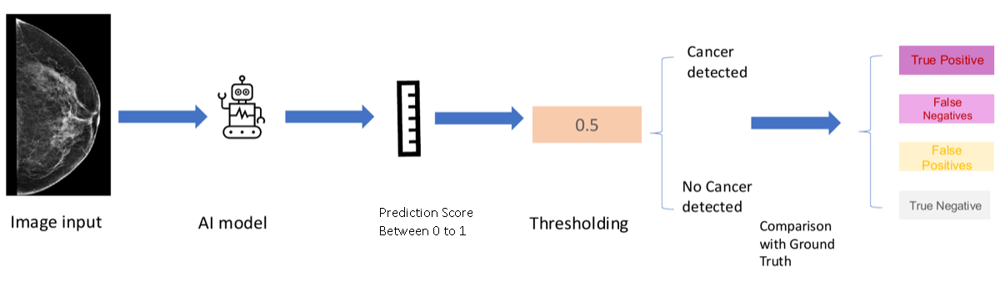

A Visual Introduction to Evaluating AIOnline Week #1 · The ROC Curve & AUC
Before you start · a 2-minute walkthrough
Your AI claims 92% accuracy. Is that good enough?
Imagine your company runs breast-cancer screening, and you have built an AI that reads each
mammogram and flags who might have cancer. It claims 92% accuracy. Before you rely on it, you
have to judge it yourself. And to judge any AI, you first need to know how it can go wrong.
So, how many types of mistakes can this AI make?
Exactly, two. The AI can raise a false alarm and flag a healthy patient, or it can
miss a real cancer. The two mistakes are not equally costly. If you are not clear on the two
types of mistakes yet, hold on to that question; they will become clear soon. Along the way you will
meet the standard tools for weighing them: the confusion matrix, the ROC curve, and AUC.
Step 1 of 7
Map each image to a risk score
To understand the mistakes AI models make, we first need to understand how AI works. The nature of
AI is to predict a risk score based on the raw input data. Using forward propagation, as we
learned previously, the model reads each mammogram and returns one number between 0 and 1. The
higher the score, the more the image looks like cancer.

The AI's screening pipeline: it maps each image to a result.
Now we have 10 images: 6 are from patients without cancer, and 4 are from patients with
cancer. The AI processes all 10, and each image gets a score, as shown above. Ideally, the
cancer patients would score high and the healthy ones low.
Gray indicates no cancer.
Red indicates cancer.
The colors show the truth for teaching; in real screening you see only the scores.
Step 2 of 7
Draw a line: set the threshold
Look at the two groups above. Generally, patients with no cancer receive lower risk scores
and patients with cancer receive higher ones. But not always: one patient without cancer
scored high, and one cancer patient scored low. The two groups overlap, and that overlap is
what makes things tricky.
So we now draw a line called the threshold. Patients with risk above the threshold are
classified as cancer; patients below it are classified as clear. There is no
single right place for the line, and moving it changes which patients are flagged as cancer.
Step 3 of 7
The two types of mistakes
Remember the question we opened with: how many types of mistakes can the AI make? You
answered two. Back then it was just a number; now that you have drawn a threshold, the two mistakes
finally show up, right there in the picture above.
False Positive, the false alarm: a patient has no cancer, but the score lands above
the threshold, so the AI wrongly calls this patient cancer. False Negative, the missed cancer: a patient has cancer, but the score lands below
the threshold, so the AI wrongly calls this patient clear.
Now do you see the two types of mistakes?
Step 4 of 7
The confusion matrix
Now count what the threshold did. At a threshold of 0.5, 4 patients without cancer are correctly
called clear, 2 are false alarms, 3 cancers are caught, and 1 is missed. Arrange those four counts in
a two-by-two table and you have the confusion matrix: the figure on the left converts to the
matrix on the right. The confusion matrix is what people use to evaluate a model's performance: one
threshold, four numbers that account for every patient.
Step 5 of 7
The two errors have names: Type 1 and Type 2
This is the same matrix you just built, and the two mistakes in it have formal names. A
False Positive is a Type 1 error: the false alarm. A False Negative is a
Type 2 error: the missed cancer.
A change in the threshold affects both Type 1 and Type 2 errors. Set it high and the AI flags
fewer patients, so Type 1 errors fall, but more cancers slip through and Type 2 errors rise. Set it
low and the reverse happens. You cannot push both to zero at once, and in screening the Type 2
miss is the mistake that can cost a life.
Step 6 of 7
Every threshold gives a different confusion matrix
The confusion matrix depends on the threshold. Watch below: as the threshold slides from 1 down to
0, the four counts keep changing. No single threshold tells the whole story, so to judge the model
itself we need to look across all thresholds at once. Press Pause anytime to freeze the
sweep and study a moment.
True Negative4
False Positive2
False Negative1
True Positive3
This is how the ROC curve is produced: each threshold adds one point to the chart.
Step 7 of 7
The ROC curve and the area under it (AUC)
Here is where the ROC curve comes from. The confusion matrix depends on the threshold, so to capture
the model's full performance across different thresholds, we take the sweep you just watched
and, at every threshold, record two rates: the True Positive Rate, the share of cancers
caught, and the False Positive Rate, the share of healthy patients wrongly flagged. Each
threshold becomes one point, and together the points trace the ROC curve. Watch it happen
above: as the threshold sweeps across the scores, the curve draws itself.
That was one model. Now suppose a second model comes along, as below. Model B is better: it
gives the cancer cases high scores and the non-cancer cases low scores, which reduces
both Type 1 and Type 2 errors. But every threshold gives different numbers, so how do we compare two
models fairly? We compare their whole curves.
Draw the ROC curve for each model and lay them on the same axes: the curve that pushes toward the
top left corner belongs to the better model. A strong model catches the cancers first, so its
curve climbs straight up before turning right; a random model mixes the two groups, so its curve just
follows the diagonal. The area under the curve, the AUC, turns each curve into one
number: 0.5 is a coin flip and 1.0 is perfect. Real mammography AI models score roughly
0.61 to 0.70.
A stronger model bows further toward the top left, and its AUC is higher.
So the order is: first pick the model by comparing ROC curves and AUC, then set that
model's threshold based on which mistake is costlier. Choosing the model and choosing the threshold
are two separate decisions.
Why this matters to a leader: the two errors are not equal, so put a real cost on each: the
dollars and the human cost of a missed cancer versus a false alarm. That cost is what
tells you where to set the threshold. The same curve can also reveal fairness gaps, where a model that
looks strong overall performs near-randomly for a particular subgroup.
Walkthrough complete
You're ready for the hands-on exercise
Everything you just walked through — risk scores, the threshold, the confusion matrix, and the
ROC curve — is live on one screen behind this walkthrough. The “About this exercise”
panel at the top of that page explains the goal and what each control does, so you can start
exploring right away.
Reopen this walkthrough anytime with “How to use this page” in the top bar.
The ROC Curve & Classification Metrics
About this exerciseclick to collapse / expand
This page puts everything from the walkthrough on one live screen. Drag the threshold across the
10-patient case study and watch the confusion matrix, the metric formulas, and the ROC operating
point respond together — then load the three models at the bottom (good, better, perfect) to see
how model quality shows up in the ROC curve and the AUC.
Blue threshold line
Drag the blue line on the patient strip. The four matrix counts and the orange dot update as you move it.
▶ Animate
Sweeps the threshold from high to low so you can watch the ROC curve build point by point.
↺ Reset
Returns the threshold to 0.50 and reloads the 10-patient case study.
Orange dot
Marks where your current threshold sits on the ROC curve.
Bottom three charts
Click any of the three models to load its data into the charts above and compare. Use "Back to case study" to return to the 10-patient example.
Classification Threshold0.50↓ drag the blue line on the patient strip to move it
10-Patient Case Study · AI Risk Scores
ROC Curve
AUC = —orange dot = operating point
Confusion Matrix
Predicted Negative
Predicted Positive
Actual Negative
—
True Negative
—
False Positive
Actual Positive
—
False Negative
—
True Positive
Metric Formulas
Accuracy
= (TP + TN) / N
——
Precision
= TP / (TP + FP)
——
Recall / TPR
= TP / (TP + FN)
——
F1 Score
= 2×TP / (2×TP + FP + FN)
——
FPR
= FP / (FP + TN)
——
ROC Curve Comparison: Model Performance · click a model to load it above